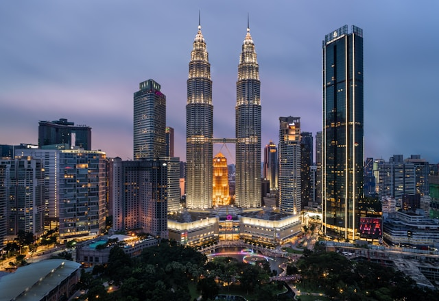
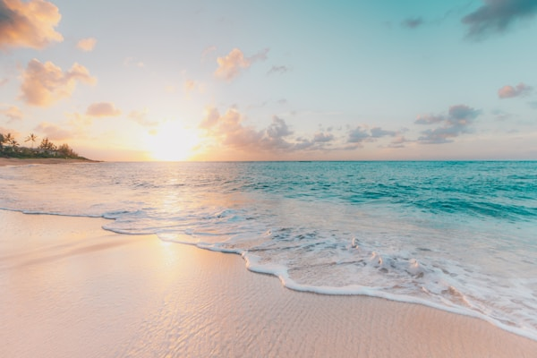
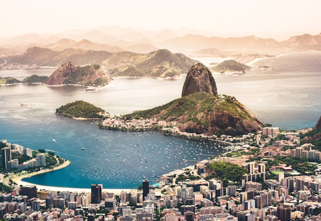

Região Norte
Aventura, natureza exuberante e culturas indígenas fascinantes

Amazônia – Manaus
A capital amazonense é o portal para a maior floresta tropical do mundo. O Encontro das Águas, onde o Rio Negro encontra o Solimões sem se misturar por quilômetros, é um dos fenômenos naturais mais impressionantes do planeta.
Atrações: Teatro Amazonas, Reserva Ducke, Arquipélago de Anavilhanas e turismo de selva.
Região Nordeste
Sol, praias paradisíacas, forró e uma cultura vibrante
Lençóis Maranhenses
Dunas brancas e lagoas de água doce criam uma paisagem que parece de outro mundo no Maranhão.
Maranhão
Fernando de Noronha
Arquipélago com as praias mais bonitas do Brasil e um ecossistema marinho preservado.
Pernambuco
Salvador
Berço da cultura afro-brasileira, com Pelourinho, carnaval de axé e culinária de dar água na boca.
BahiaRegião Sudeste
Metrópoles vibrantes, serras verdes e praias elegantes

Rio de Janeiro
A Cidade Maravilhosa combina montanhas, florestas urbanas e praias mundialmente famosas. O Cristo Redentor, o Pão de Açúcar e o Carnaval colocam o Rio no mapa do turismo mundial.
Atrações: Praia de Ipanema, Copacabana, Floresta da Tijuca, Santa Teresa e o Maracanã.